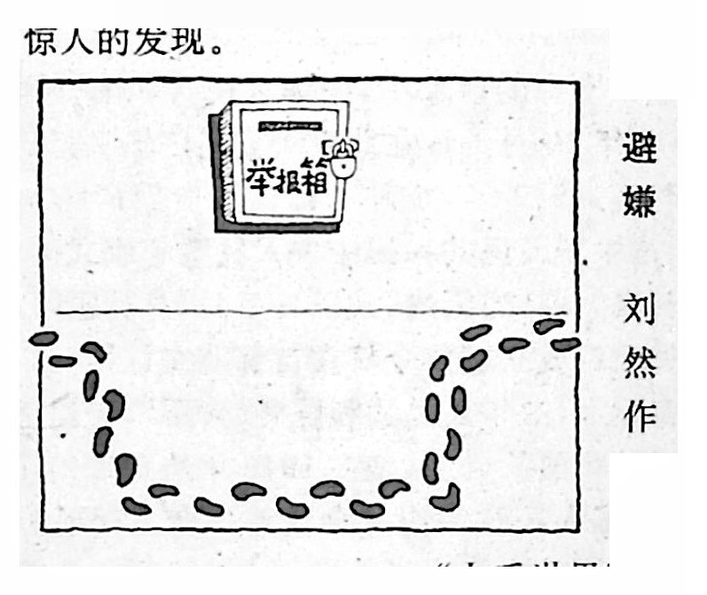

刘然作 《人事》1990年第10期（总第61期），第40页
避嫌
Keeping Clear
- Text in the drawing
- 举报箱
Box for reports of wrongdoing - Description
- A padlocked box for reporting wrongdoing hangs on the wall, and a trail of footprints comes toward it along the floor — then loops round in a wide U and goes back the way it came.
- Note
- 避嫌, “avoiding suspicion,” normally describes an official stepping back from a matter involving relatives; here ordinary people steer clear of the complaints box. Liu Ran also drew in 1985 no. 1.
- Artist
- Liu Ran 刘然
- Published in
- 《人事》1990年第10期（总第61期）, p. 40
- Themes
- Complaints and petitions · Bureaucratism

Cite
Liu Ran, “避嫌” [Keeping Clear], Renshi (Personnel) 《人事》, 1990, no. 10, p. 40.